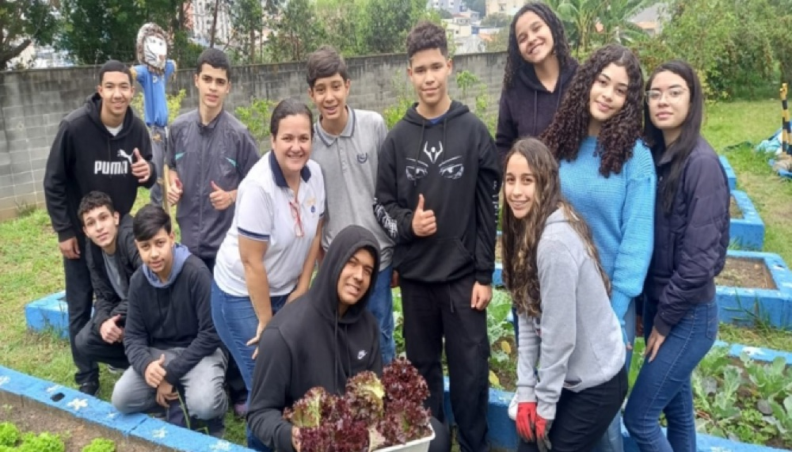
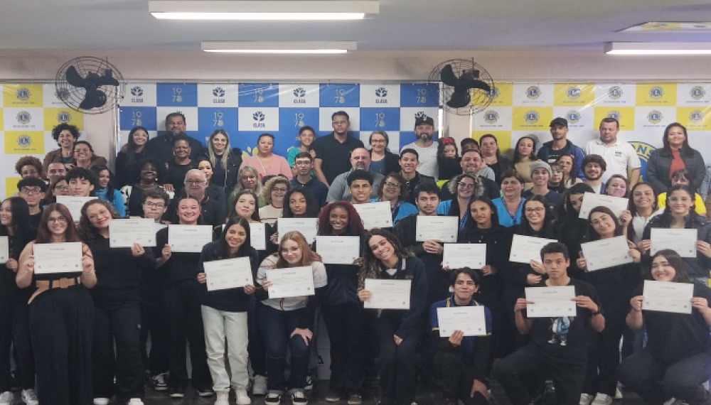
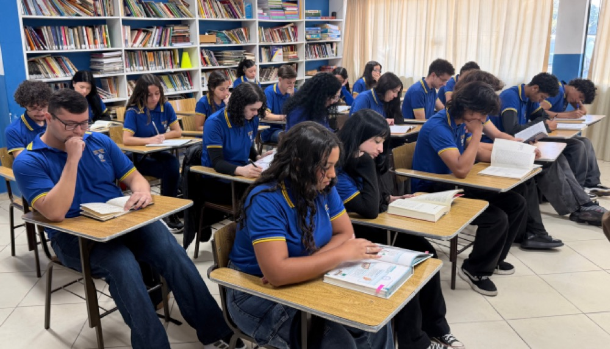

SCFV
Promove convivência, vínculos sociais e preparação para o trabalho, com foco em pessoas em risco social.

Promove convivência, vínculos sociais e preparação para o trabalho, com foco em pessoas em risco social.

O programa desenvolve competências e autonomia em jovens, preparando-os para a inserção no mundo do trabalho.

Promove a inserção de jovens no mercado de trabalho por meio de contrato de aprendizagem.
O Serviço de Convivência e Fortalecimento de Vínculos promove a convivência social, o fortalecimento de vínculos, a participação cidadã e a formação geral para o mundo do trabalho. Pautamo-nos no público-alvo elencado na Tipificação Nacional de Serviços Socioassistenciais, priorizando aqueles que vivenciam situações de risco social, conforme a Resolução CNAS nº 1/2013, em consonância com a Constituição Federal de 1988, a Lei Orgânica da Assistência Social (LOAS), o Estatuto da Criança e do Adolescente (ECA), as normativas da Política de Assistência Social — em especial a Resolução CNAS nº 109/2009 — e orientações técnicas específicas.
Promover a socialização entre usuários e fortalecer os vínculos familiares e comunitários, bem como realizar trabalhos nos eixos: Eu Comigo, Eu com os outros e Eu com a cidade, em concomitância com os temas transversais: Meio Ambiente, atualidades, artes-cultura e esportes (jogos coletivos).
O acesso ao SCFV dar-se-á por procura espontânea, encaminhamentos realizados pelos Centros de Referência de Assistência Social (CRAS), Centros de Referência Especializados de Assistência Social (CREAS) do município, pela rede socioassistencial de serviços, pelas demais políticas públicas e por meio dos órgãos integrantes do Sistema de Garantia de Direitos.
O SCFV destina-se a adolescentes com idade entre 15 e 17 anos, sem discriminação de qualquer natureza (gênero, raça, etnia, religião, convicção, limitação pessoal ou outra), residentes no município de Santo André, matriculados ou não no ensino formal, que se encontram em situações de vulnerabilidade social.
O Lions Quest, o programa de destaque de educação para jovens da Fundação de Lions Clubs International (LCIF), é um currículo de aprendizagem socioemocional que oferece aos jovens as habilidades para percorrer a vida, prevenir o bullying e evitar o abuso de substâncias.
O programa Integrar tem como objetivo estimular e desenvolver nos adolescentes e jovens competências e habilidades que contribuam para a promoção e inserção ao mundo do trabalho, proporcionando um espaço de convivência e de fortalecimento da autonomia, composto de uma grade curricular básica.
Município de Santo André, Grande ABCDMR e adjacências do município de São Paulo.
Adolescentes e jovens de 17 a 21 anos, estudantes de escola pública a partir do 9º ano do ensino fundamental ou que tenham concluído o Ensino Médio.
O Programa de Aprendizagem — socioaprendizagem — visa a inserção de jovens no mercado de trabalho, estabelecido pela Lei de Aprendizagem 10.097/2000, por um contrato especial de trabalho com duração de no máximo 24 meses, por meio de ações que assegurem aos adolescentes e jovens o direito à profissionalização, oportunidade do primeiro emprego, elevação da escolaridade e permanência escolar, geração de renda e o estímulo ao empreendedorismo, contribuindo desta forma para sua autonomia e melhoria da qualidade de vida.
Para tornar-se um aprendiz, o jovem deve ter idade entre 16 e 22 anos, estar regularmente matriculado em unidade escolar da rede pública de ensino, frequentando a partir do 9º ano do ensino fundamental ou ter concluído o ensino médio e, preferencialmente, ter concluído o curso de Programa de Integração do Mundo do Trabalho, oferecido gratuitamente pela CLASA.
Além de atuar com os quesitos técnico-profissionais, os jovens têm a oportunidade de desenvolver suas múltiplas habilidades, além de suas competências técnicas, e praticam atividades envolvendo a participação da família, com supervisão qualificada e acompanhamento social.